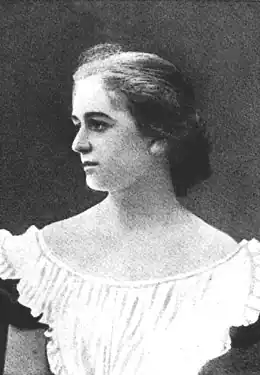

Наталена Королева
(3 березня 1888 — 1 липня 1966)
ДИВОСВІТИ НАТАЛЕНИ КОРОЛЕВОЇ Тільки в 1988р. ми дізналися про Наталену Королеву, творчість якої могла б стати окрасою будь-якої розвиненої європейської літератури. На 100-річчя з дня народження письменниці відгукнулися журнали "Жовтень", "Українська мова і література в школі", "Радянське літературознавство", газети "Молода гвардія", "Літературна Україна". Спілка письменників України провела літературний вечір "Наталена Королева — український історичний белетрист". Не читавши більшості книжок, не знаючи достеменно навіть життєвого шляху письменниці, нелегко було говорити предметно про її творчість. В Україні донині не видано жодного твору Н. Королевої, а випущені в 30-х роках у Львові її книжки стали справжньою бібліографічною рідкістю, їх лічені примірники в наукових бібліотеках закриті для широкого читача. В останній рік життя письменниці у Пряшеві побачили світ дві її повісті "Сон тіні. 1313" (1966). Проте вони майже не дійшли до України. Цьому спричинилися як відомі події в Чехо-Словаччині 1968 року, так і чомусь одіозна на той час постать упорядника книги дра Ореста Зілинського. Кілька її примірників в особистих бібліотеках письменників і бібліофілів не могли створити загальної думки. Видання не було навіть прорецензоване, і самобутня творчість Н. Королевої після її смерті понад двадцять років залишалася забутою. Останнім часом зріс інтерес до історичного минулого, заповнюються прогалини в історії української літератури і в літературний процес повертаються письменники, які з різних причин жили й працювали поза межами України. Ім'я Н. Королевої також викликає пильну зацікавленість. Н. Королева не належить до української еміграції. Не українка за походженням і освітою, вона прийшла в українську літературу, випробувавши свої сили в літературі французькій. Сталося так, що доля зв'язала її з українським письменником Василем Королівом-Старим, який уже в зрілому віці схилив талановиту письменницю до української літератури. Вона все життя була вдячна чоловікові за те, що вивів її "з інших далеких шляхів на шлях українського письменства". Гірко переживала письменниця свою самотність після смерті В. Короліва-Старого, не могла змиритися із забуттям, що супроводжувало її у 40-і — на початку 60-х років. Спадщина письменниці не вивчена, частина її творів ще не видана, але і те, що свого часу побачило світ і доступне нині для прочитання, свідчить, що Н. Королева — видатне явище в історії української літератури. Вона внесла в українську прозу нові теми з античного і європейського світу, успішно продовживши традиції Лесі Українки. В цьому найбільша її заслуга. Опрацьовуючи історичні та біблійні теми, письменниця свідомо обходила теми української історії, але намагалася бодай якимись невидимими гранями пов'язати світ стародавніх Скіфії, Русі і України з світом античності й середньовіччя. Вона обновила деякі прозові жанри в українській літературі: довела до класичної віртуозності жанр історичної повісті, розкувала жанр літературної легенди, вдало поєднавши язичницький, античний, скіфський і староруський світи з біблійним, християнським. В традиційний стиль і образну мову української прози влився свіжий струмінь європейського письма. Лексика, фразеологія, точність образу і вислову, навіть синтаксичні конструкції речень відрізняють її художній текст від суто українського. Н. Королева знайшла в українській літературі свій індивідуальний художній світ, для якого характерний симбіоз східної і західної культур, язичництва і християнства, синтез романського, арабського, греко-римського, візантійського і слов'янського стилів. Як вчений-археолог, ерудит, людина новітньої європейської культури, пишучи твори на світові теми, Н. Королева зовсім не переслідувала пізнавальні і популяризаторські цілі. В центрі її уваги — людина, її духовний світ. Герої творів письменниці — люди непересічні, біблійні, античні і міфологічні постаті, лицарі, винахідники, яких об'єднує жадоба знань, пошук істини, утвердження високих ідеалів загального добра, братерства і любові. За зовнішньою оболонкою світових тем творів Н. Королевої ми повинні побачити саме це, основне, що є наслідком болісних шукань письменниці, виявом її високого благородства, чистоти і шляхетності. Життя письменниці, може, комусь нагадає фантастично-пригодницьку арабську казку, але насправді воно було тяжким і тривожним, суголосним тим історичним і суспільним катаклізмам, свідком і учасником яких вона була. Наталена Королева народилася 3 березня 1888р. в селі Сан-Педро де Карденья біля м. Бургос у Північній Іспанії. Повне її ім'я за старовинним іспанським звичаєм: Кармен-Альфонса-Фернанда-Естрелья-Наталена. Мати майбутньої письменниці Марія-Клара де Кастро Лачерда Медіна-селі померла при пологах. Вона походила із старовинного іспанського роду Лачерда. Батько Наталени — польський граф Адріан-Юрій Дунін-Борковський — займався археологією, жив переважно у Франції. Родовий маєток його матері Теофілі з литовського роду Домонтовичів знаходився у с. Великі Борки на Волині. Батько А.-Ю. Дуніна-Борковського Адам Дунін-Борковський загинув під час польського повстання 1863р., його майно було конфісковане царським урядом. Наталену одразу після народження взяла до себе бабуся Теофіля, у якої вона жила до п'яти років. Після смерті бабусі дівчинку забрав до Іспанії материн брат Еугеніо, старшина королівської гвардії, згодом католицький священик. Там нею опікувалась також тітка Інеса. Наталену віддали на виховання в монастир Нотр-Дам де Сіон у французьких Піренеях, де вона пробула майже дванадцать років. Пізніше Н. Королева з великим пієтетом згадувала монастир Нотр-Дам, де формувалась як особистість, вчилася добру, милосердю, самопожертві. Студіювала мови, філософію, історію, археологію, медицину, музику, співи. Часто вона бувала у своїх іспанських родичів. Вчилася їздити на конях, фехтувати, стріляти. Тим часом батько одружився вдруге з Людмилою Лось, що походила із знатного чеського роду і мала маєток в містечку Красне біля Львова. Оселилися в Києві, і мачуха забажала, щоб її падчерка продовжувала тут навчання. Восени 1904р. сімнадцятирічна Наталена приїздить до Києва. На цей час вона вже знала іспанську, французьку, латинську, італійську, арабську мови, з дитинства трохи пам'ятала українську й польську. В сім'ї розмовною була французька. Освоївши російську мову, дівчина вступила до київського Інституту шляхетних дівчат, який закінчила через два роки. Програма не була особливо обтяжливою. Насамперед тут мали навчити "манір", "доброї поведінки" та "мистецтва обертатися в товаристві собі рівних". Все інше було другорядним. Пізніше, у повісті "Без коріння", письменниця так охарактеризувала життя в цьому інституті: "Одноманітне інститутське життя таке ж далеке їй (героїні твору. — О. М.) і чуже, як і першого дня, коли вона опинилася поміж цими сливе дорослими дівчатами, які мали або так часто попадали в психіку дітей, що були примушені нудитись у хаті в дощовий день". Наталена стала свідком справжньої війни між вихованками й вихователями, спостерігала, як "класні дами" ненавиділи й переслідували своїх учениць. Уже на схилі віку, у 1962р., в одному з листів письменниця згадувала про те, "як колись жилося в Києві, як за ті часи виховували дівчат, як поводились "маючі владу", і доходила невтішного висновку: "На думку мою — були то кошмарні часи й звичаї, яких ані навмисне не вигадаєш!" Та не зважаючи ні на що, молода Н. Королева вийшла чистою й неозлобленою з цього закладу. Мачуха не сприйняла її, не хотіла та й не могла побачити в ній особистості, що має свої життєві принципи. Їй готували вторований шлях для дівчат її стану — вигідне одруження і спокійне існування. Батьки підшукали й нареченого — бравого гусара російської армії. Наталена й чути не хотіла про одруження і поїхала здобувати вищу освіту. Спочатку вчилася в Петербурзі, закінчила тут археологічний інститут, одержала ступінь доктора археології за праці з литовської старовини, потім зайнялася єгиптологією і водночас вчилася в Петербурзькій мистецькій академії, після закінчення якої одержала диплом "вільного художника", мала свої художні виставки в Петербурзі й Варшаві. Контакти з батьком і мачухою не налагоджувались, бо вони наполягали на її одруженні з нелюбом. Тоді Наталена йде на нечуваний у шляхетському роду вчинок — вступає до французького Михайлівського театру в Петербурзі, а згодом укладає контракт з паризьким "Theatre Gymnase", що гастролював тоді в столиці. Незважаючи на успіх на сцені, театральна кар'єра Наталени не вдалася через слабке здоров'я. Вона залишає театр, лікується на Закавказзі, а потім виїжджає в Західну Європу, де продовжує лікування, займається улюбленою справою — мистецтвом і археологією. Ці роки були чи не найкращими в її сповненому тривог житті. Вона побувала в Іспанії, Франції, Італії, країнах Близького Сходу, знову виступила в оперних театрах Парижа і Венеції (співала партію Кармен в опері Ж. Бізе), взяла участь в археологічних розкопках Помпей і в Єгипті, з 1909р. почала системачно виступати з художніми творами і науковими статтями у французьких літературних і наукових журналах. Перша світова війна застає Н. Королеву в Києві: вона приїхала до хворого батька, який невдовзі й помер. Тут за нею було встановлено поліційний нагляд, на квартирі вчинено обшук. Не маючи змоги виїхати (кордони було закрито), вона (через товариство Червоного Хреста) стає сестрою милосердя в російській армії. Майже три роки пробула Наталена на війні, одержала солдатський хрест "За храбрость", три поранення, тиф і кілька запалень легенів. Пізніше письменниця згадувала, що хрест "За храбрость" їй дали тільки за те, що під час ворожого обстрілу залишилася з пораненими вояками, виконавши свій звичайний обов'язок. Особисте життя Н. Королевої під час війни склалося драматично. Вона одружилася з офіцером російської армії і громадянином Ірану, що служив у "дикій дивізії", — Іскандером Гакгаманіш ібн Курушем, який невдовзі загинув під Варшавою. Відпровадивши домовину з тілом чоловіка до Ірану, Наталена повернулася до Києва.